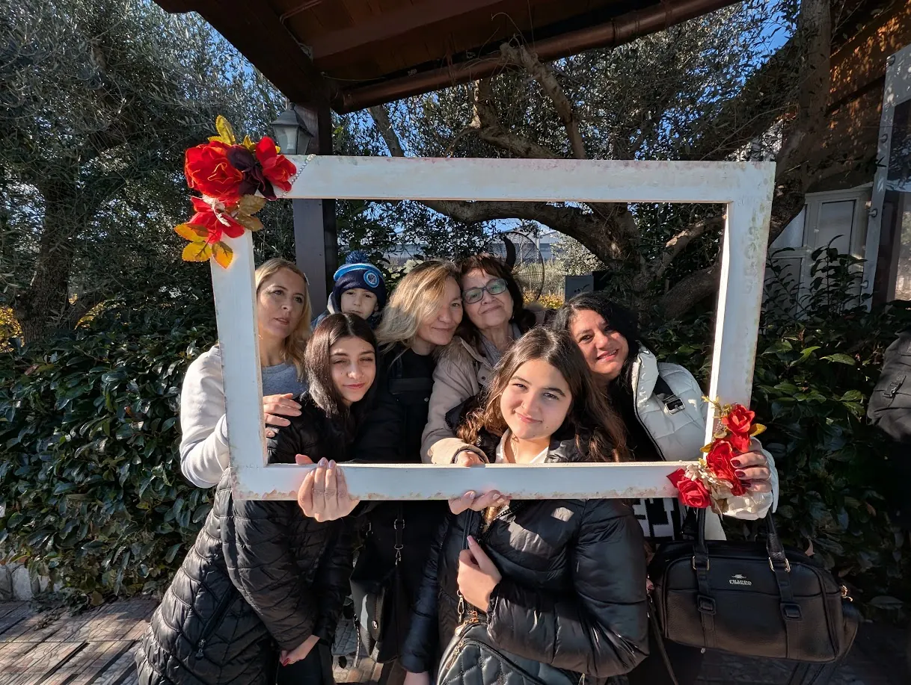

Dom10:15
Culto della domenica
Ogni domenica alle 10:15 · caffè dalle 10:00 · Via Casalanno, 85 — Pozzuoli (NA)

Culti, serate, attività e momenti speciali. Segna le date e porta un amico!
Ogni domenica alle 10:15 · caffè dalle 10:00 · Via Casalanno, 85 — Pozzuoli (NA)
Scrivici su WhatsApp per ricevere gli aggiornamenti sugli eventi.